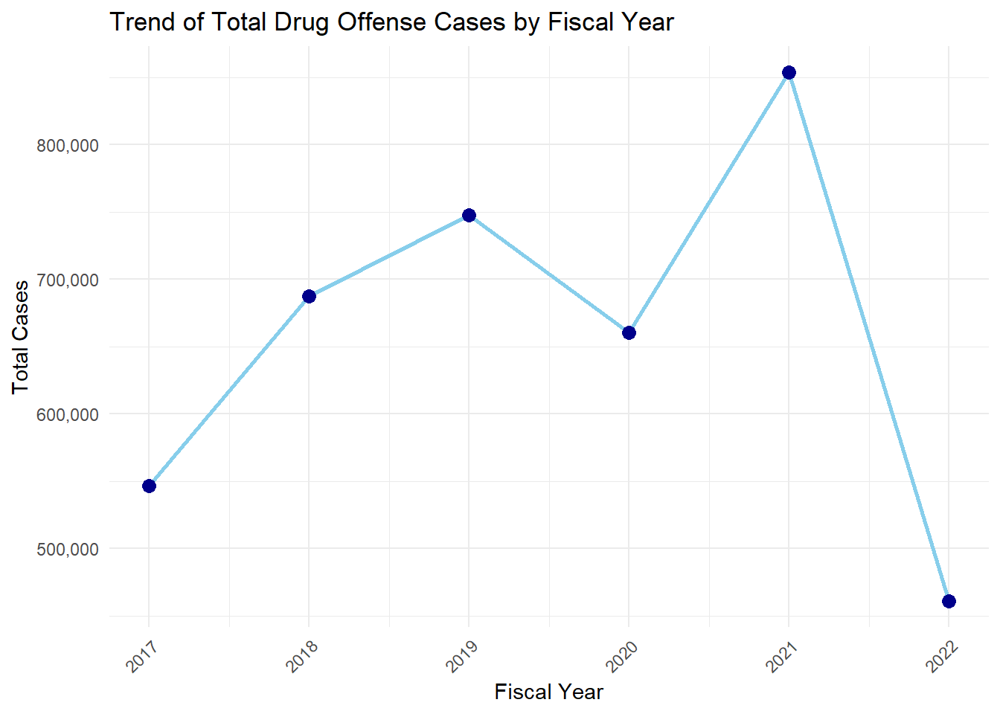
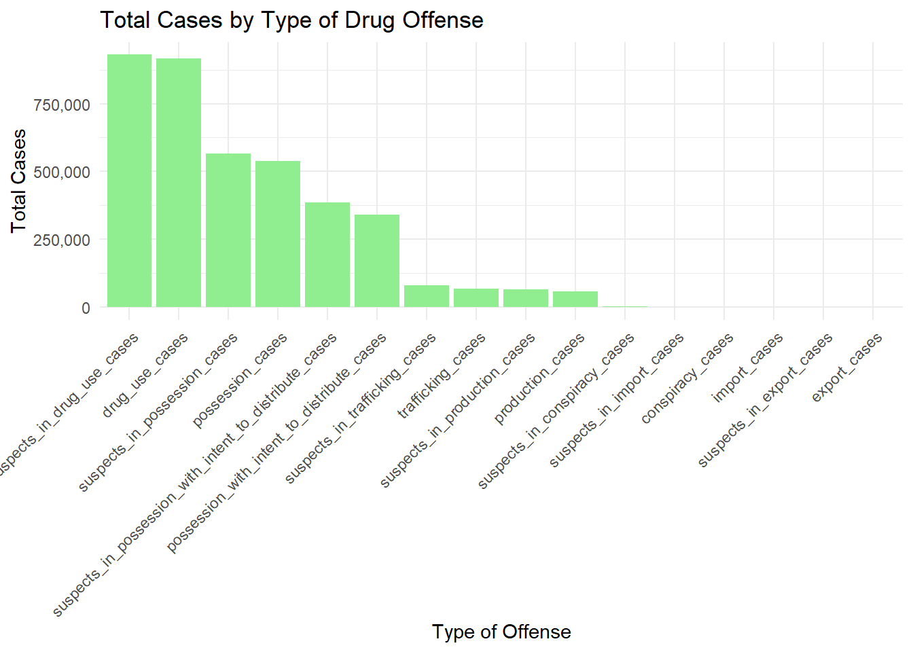
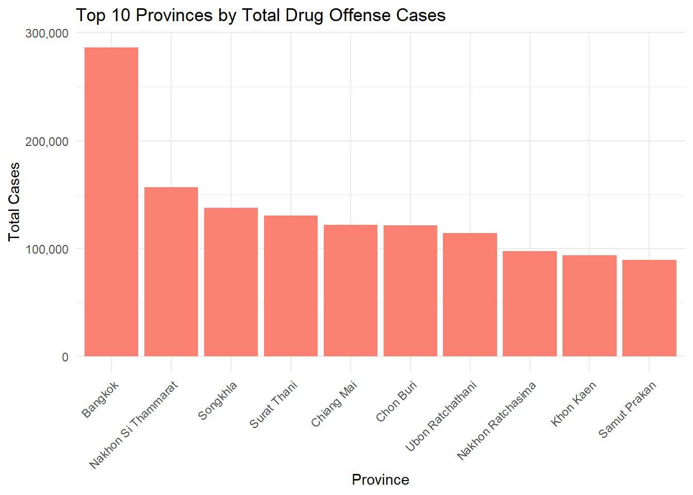
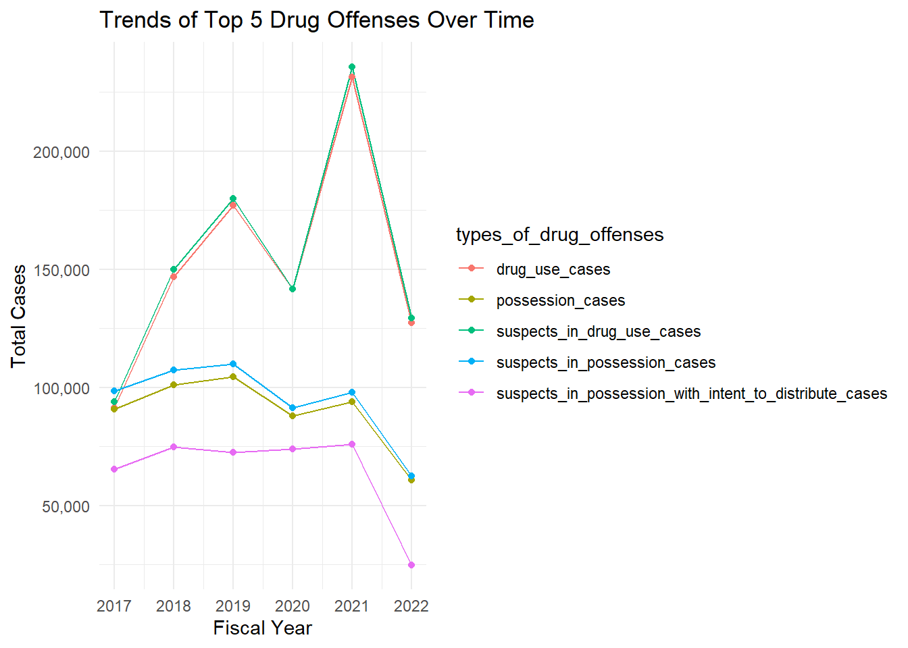
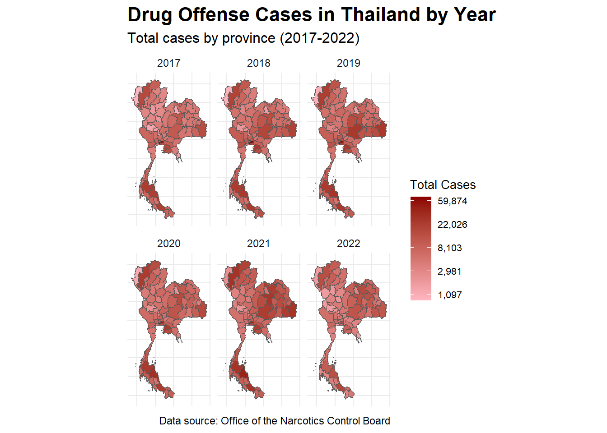
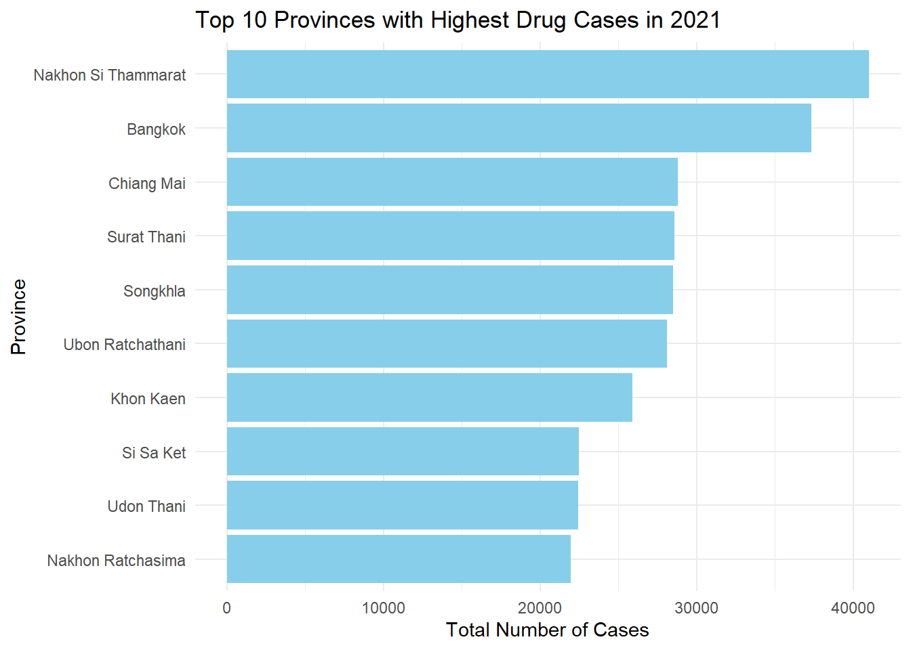
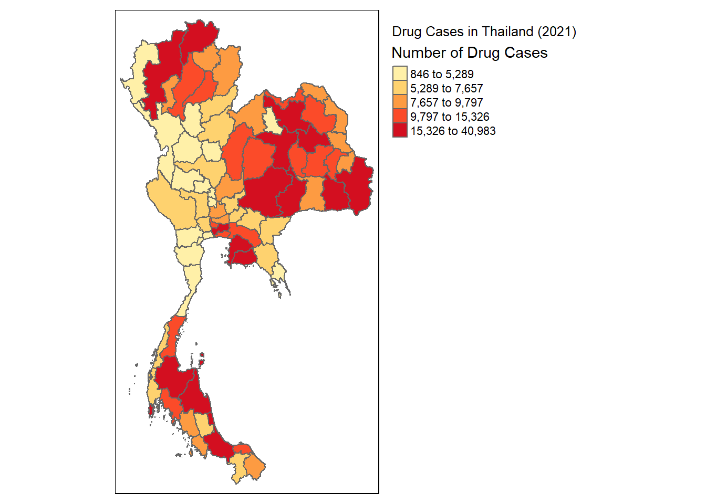

pacman::p_load(sf, spdep, tmap, tidyverse, lubridate, scales, sfdep)Application of Geospatial Analysis Methods to Discover Thailand Drug Abuse at the Province Level
The application of geospatial analytics to complex societal challenges has emerged as a powerful tool for understanding and addressing global issues. This study leverages advanced spatial and spatio-temporal point pattern analysis techniques to examine the geographical distribution and evolution of armed conflict in Myanmar following the military coup of February 1, 2021.
To provide more context for this analysis, readers are encouraged to explore two key resources:
The International Institute for Strategic Studies (IISS) offers an interactive map of the conflict, along with a concise introduction to the situation in Myanmar. This resource can be accessed at https://myanmar.iiss.org/
For a comprehensive understanding of the conflict, the Special Advisory Council for Myanmar has published an in-depth report, available at https://specialadvisorycouncil.org/.
These resources complement our geospatial analysis by providing crucial background information and additional perspectives on the ongoing conflict in Myanmar.
Objectives
if the key indicators of drug abuse of Thailand are independent from space.
If the indicators of drug abuse is indeed spatial dependent, then, you would like to detect where are the clusters and outliers, and the hotspots.
Last but not least, you are also interested to investigate how the observation above evolve over time.
The specific tasks of this take-home exercise are as follows:
Using appropriate function of sf and tidyverse, preparing the following geospatial data layer:
a study area layer in sf polygon features. It must be at province level (including Bangkok) of Thailand.
a drug abuse indicators layer within the study area in sf polygon features.
Using the extracted data, perform global spatial autocorrelation analysis by using sfdep methods.
Using the extracted data, perform local spatial autocorrelation analysis by using sfdep methods.
Describe the spatial patterns revealed by the analysis above.
About Dataset
Thailand Drug Offenses [2017-2022]
This dataset presents statistics related to different types of drug offenses in Thailand, categorized by fiscal year. The data provides insights into the prevalence of various drug-related cases and their distribution across different provinces.
Sourced from the Office of the Narcotics Control Board
Cleaned and ready-to-use 77 Provinces, 6 Years with total 7,392 rows.
Fiscal Year: The fiscal year during which the drug offenses were recorded.
Types of Drug Offenses: The various categories of drug-related offenses that are being reported. These categories include cases related to drug use, possession, possession with intent to distribute, trafficking, production, import, export, conspiracy, and more.
Number of Cases: The total number of cases recorded for each specific combination of fiscal year, type of drug offense, and province.
Column Descriptions:
| Column | Description |
|---|---|
| fiscal_year | The fiscal year during which the drug offenses were recorded. |
| types_of_drug_offenses | The specific type or category of drug offense being reported. The types include drug use cases, suspects in drug use cases, possession cases, suspects in possession cases, possession with intent to distribute cases, suspects in possession with intent to distribute cases, trafficking cases, suspects in trafficking cases, production cases, suspects in production cases, import cases, suspects in import cases, export cases, suspects in export cases, conspiracy cases, and suspects in conspiracy cases. |
| no_cases | The total number of cases recorded for the specific combination of fiscal year, type of drug offense, and province. |
| province_th | The name of the province in Thailand, written in Thai. |
| province_en | The name of the province in Thailand, written in English. |
adm1 <- st_read(dsn = "data/adm", layer = "tha_admbnda_adm1_rtsd_20220121")Reading layer `tha_admbnda_adm1_rtsd_20220121' from data source
`C:\zcchong\IS415\Takehome_Ex\Takehome_Ex2\data\adm' using driver `ESRI Shapefile'
Simple feature collection with 77 features and 16 fields
Geometry type: MULTIPOLYGON
Dimension: XY
Bounding box: xmin: 97.34336 ymin: 5.613038 xmax: 105.637 ymax: 20.46507
Geodetic CRS: WGS 84adm0 <- st_read(dsn = "data/adm", layer = "tha_admbnda_adm0_rtsd_20220121")Reading layer `tha_admbnda_adm0_rtsd_20220121' from data source
`C:\zcchong\IS415\Takehome_Ex\Takehome_Ex2\data\adm' using driver `ESRI Shapefile'
Simple feature collection with 1 feature and 13 fields
Geometry type: MULTIPOLYGON
Dimension: XY
Bounding box: xmin: 97.34336 ymin: 5.613038 xmax: 105.637 ymax: 20.46507
Geodetic CRS: WGS 84st_crs(adm1)Coordinate Reference System:
User input: WGS 84
wkt:
GEOGCRS["WGS 84",
DATUM["World Geodetic System 1984",
ELLIPSOID["WGS 84",6378137,298.257223563,
LENGTHUNIT["metre",1]]],
PRIMEM["Greenwich",0,
ANGLEUNIT["degree",0.0174532925199433]],
CS[ellipsoidal,2],
AXIS["latitude",north,
ORDER[1],
ANGLEUNIT["degree",0.0174532925199433]],
AXIS["longitude",east,
ORDER[2],
ANGLEUNIT["degree",0.0174532925199433]],
ID["EPSG",4326]]adm1Simple feature collection with 77 features and 16 fields
Geometry type: MULTIPOLYGON
Dimension: XY
Bounding box: xmin: 97.34336 ymin: 5.613038 xmax: 105.637 ymax: 20.46507
Geodetic CRS: WGS 84
First 10 features:
Shape_Leng Shape_Area ADM1_EN ADM1_TH ADM1_PCODE
1 2.417227 0.13133873 Bangkok กรุงเทพมหานคร TH10
2 1.695100 0.07926199 Samut Prakan สมุทรปราการ TH11
3 1.251111 0.05323766 Nonthaburi นนทบุรี TH12
4 1.884945 0.12698345 Pathum Thani ปทุมธานี TH13
5 3.041716 0.21393797 Phra Nakhon Si Ayutthaya พระนครศรีอยุธยา TH14
6 1.739908 0.07920961 Ang Thong อ่างทอง TH15
7 5.693342 0.54578838 Lop Buri ลพบุรี TH16
8 1.778326 0.06872655 Sing Buri สิงห์บุรี TH17
9 2.896316 0.20907828 Chai Nat ชัยนาท TH18
10 4.766446 0.29208711 Saraburi สระบุรี TH19
ADM1_REF ADM1ALT1EN ADM1ALT2EN ADM1ALT1TH ADM1ALT2TH ADM0_EN ADM0_TH
1 <NA> <NA> <NA> <NA> <NA> Thailand ประเทศไทย
2 <NA> <NA> <NA> <NA> <NA> Thailand ประเทศไทย
3 <NA> <NA> <NA> <NA> <NA> Thailand ประเทศไทย
4 <NA> <NA> <NA> <NA> <NA> Thailand ประเทศไทย
5 <NA> <NA> <NA> <NA> <NA> Thailand ประเทศไทย
6 <NA> <NA> <NA> <NA> <NA> Thailand ประเทศไทย
7 <NA> <NA> <NA> <NA> <NA> Thailand ประเทศไทย
8 <NA> <NA> <NA> <NA> <NA> Thailand ประเทศไทย
9 <NA> <NA> <NA> <NA> <NA> Thailand ประเทศไทย
10 <NA> <NA> <NA> <NA> <NA> Thailand ประเทศไทย
ADM0_PCODE date validOn validTo geometry
1 TH 2019-02-18 2022-01-22 -001-11-30 MULTIPOLYGON (((100.6139 13...
2 TH 2019-02-18 2022-01-22 -001-11-30 MULTIPOLYGON (((100.7306 13...
3 TH 2019-02-18 2022-01-22 -001-11-30 MULTIPOLYGON (((100.3415 14...
4 TH 2019-02-18 2022-01-22 -001-11-30 MULTIPOLYGON (((100.8916 14...
5 TH 2019-02-18 2022-01-22 -001-11-30 MULTIPOLYGON (((100.5131 14...
6 TH 2019-02-18 2022-01-22 -001-11-30 MULTIPOLYGON (((100.3332 14...
7 TH 2019-02-18 2022-01-22 -001-11-30 MULTIPOLYGON (((101.3453 15...
8 TH 2019-02-18 2022-01-22 -001-11-30 MULTIPOLYGON (((100.3691 15...
9 TH 2019-02-18 2022-01-22 -001-11-30 MULTIPOLYGON (((100.1199 15...
10 TH 2019-02-18 2022-01-22 -001-11-30 MULTIPOLYGON (((101.3994 15...# Load the dataset
data <- read_csv("data/thai_drug_offenses_2017_2022.csv")
# 1. Basic information about the dataset
str(data)spc_tbl_ [7,392 × 5] (S3: spec_tbl_df/tbl_df/tbl/data.frame)
$ fiscal_year : num [1:7392] 2017 2017 2017 2017 2017 ...
$ types_of_drug_offenses: chr [1:7392] "drug_use_cases" "drug_use_cases" "drug_use_cases" "drug_use_cases" ...
$ no_cases : num [1:7392] 11871 200 553 450 378 ...
$ province_th : chr [1:7392] "กรุงเทพมหานคร" "ชัยนาท" "นนทบุรี" "ปทุมธานี" ...
$ province_en : chr [1:7392] "Bangkok" "Chai Nat" "Nonthaburi" "Pathum Thani" ...
- attr(*, "spec")=
.. cols(
.. fiscal_year = col_double(),
.. types_of_drug_offenses = col_character(),
.. no_cases = col_double(),
.. province_th = col_character(),
.. province_en = col_character()
.. )
- attr(*, "problems")=<externalptr> summary(data) fiscal_year types_of_drug_offenses no_cases province_th
Min. :2017 Length:7392 Min. : 0.0 Length:7392
1st Qu.:2018 Class :character 1st Qu.: 1.0 Class :character
Median :2020 Mode :character Median : 70.0 Mode :character
Mean :2020 Mean : 535.3
3rd Qu.:2021 3rd Qu.: 623.0
Max. :2022 Max. :17131.0
province_en
Length:7392
Class :character
Mode :character
# 2. Distribution of cases across years (updated to line chart)
yearly_cases <- data %>%
group_by(fiscal_year) %>%
summarize(Total_Cases = sum(no_cases))
ggplot(yearly_cases, aes(x = fiscal_year, y = Total_Cases, group = 1)) +
geom_line(color = "skyblue", size = 1) +
geom_point(color = "darkblue", size = 3) +
labs(title = "Trend of Total Drug Offense Cases by Fiscal Year",
x = "Fiscal Year", y = "Total Cases") +
theme_minimal() +
scale_y_continuous(labels = comma) +
scale_x_continuous(breaks = yearly_cases$fiscal_year) +
theme(axis.text.x = element_text(angle = 45, hjust = 1))
# 3. Types of drug offenses
offense_types <- data %>%
group_by(types_of_drug_offenses) %>%
summarize(Total_Cases = sum(no_cases)) %>%
arrange(desc(Total_Cases))
ggplot(offense_types, aes(x = reorder(types_of_drug_offenses, -Total_Cases), y = Total_Cases)) +
geom_bar(stat = "identity", fill = "lightgreen") +
labs(title = "Total Cases by Type of Drug Offense",
x = "Type of Offense", y = "Total Cases") +
theme_minimal() +
theme(axis.text.x = element_text(angle = 45, hjust = 1)) +
scale_y_continuous(labels = comma)
# 4. Geographical distribution of cases
province_cases <- data %>%
group_by(province_en) %>%
summarize(Total_Cases = sum(no_cases)) %>%
arrange(desc(Total_Cases))
top_10_provinces <- head(province_cases, 10)
ggplot(top_10_provinces, aes(x = reorder(province_en, -Total_Cases), y = Total_Cases)) +
geom_bar(stat = "identity", fill = "salmon") +
labs(title = "Top 10 Provinces by Total Drug Offense Cases",
x = "Province", y = "Total Cases") +
theme_minimal() +
theme(axis.text.x = element_text(angle = 45, hjust = 1)) +
scale_y_continuous(labels = comma)
# 5. Trends over time for top offenses
top_5_offenses <- head(offense_types$types_of_drug_offenses, 5)
trends_data <- data %>%
filter(types_of_drug_offenses %in% top_5_offenses) %>%
group_by(fiscal_year, types_of_drug_offenses) %>%
summarize(Total_Cases = sum(no_cases))
ggplot(trends_data, aes(x = fiscal_year, y = Total_Cases, color = types_of_drug_offenses)) +
geom_line() +
geom_point() +
labs(title = "Trends of Top 5 Drug Offenses Over Time",
x = "Fiscal Year", y = "Total Cases") +
theme_minimal() +
scale_y_continuous(labels = comma)
# Get unique province names from both datasets
shapefile_provinces <- unique(adm1$ADM1_EN)
data_provinces <- unique(data$province_en)
# Create a comparison dataframe
comparison <- data.frame(
shapefile_provinces = sort(shapefile_provinces),
data_provinces = sort(data_provinces)
)
# Check for exact matches
comparison$exact_match <- comparison$shapefile_provinces == comparison$data_provinces
# Print provinces that don't match exactly
mismatches <- comparison[!comparison$exact_match, ]
print("Provinces that don't match exactly:")[1] "Provinces that don't match exactly:"print(mismatches) shapefile_provinces data_provinces exact_match
4 Bueng Kan buogkan FALSE
21 Loei Loburi FALSE
22 Lop Buri Loei FALSE# Function to calculate string similarity
string_similarity <- function(a, b) {
agrepl(a, b, max.distance = 0.1)
}
# Check for similar names among mismatches
if(nrow(mismatches) > 0) {
for(i in 1:nrow(mismatches)) {
similar <- sapply(data_provinces, function(x) string_similarity(mismatches$shapefile_provinces[i], x))
if(any(similar)) {
cat("Possible match for", mismatches$shapefile_provinces[i], ":", data_provinces[similar], "\n")
}
}
}Possible match for Loei : Loei # Check for provinces in one dataset but not in the other
in_shapefile_not_in_data <- setdiff(shapefile_provinces, data_provinces)
in_data_not_in_shapefile <- setdiff(data_provinces, shapefile_provinces)
cat("\nProvinces in shapefile but not in data:\n")
Provinces in shapefile but not in data:print(in_shapefile_not_in_data)[1] "Lop Buri" "Bueng Kan"cat("\nProvinces in data but not in shapefile:\n")
Provinces in data but not in shapefile:print(in_data_not_in_shapefile)[1] "Loburi" "buogkan"# Function to update province names
update_province_name <- function(name) {
case_when(
name == "Loburi" ~ "Lop Buri",
name == "buogkan" ~ "Bueng Kan",
TRUE ~ name
)
}
# Update the province_en column
data$province_en <- sapply(data$province_en, update_province_name)
# Verify the changes
print(data %>%
filter(province_en %in% c("Lop Buri", "Bueng Kan", "Loei")) %>%
select(province_en) %>%
distinct())# A tibble: 3 × 1
province_en
<chr>
1 Lop Buri
2 Bueng Kan
3 Loei # Get unique province names from both datasets
shapefile_provinces <- unique(adm1$ADM1_EN)
data_provinces <- unique(data$province_en)
# Check for any remaining mismatches
mismatches <- setdiff(data_provinces, shapefile_provinces)
cat("\nAny remaining mismatches between data provinces and shapefile:\n")
Any remaining mismatches between data provinces and shapefile:print(mismatches)character(0)if (length(mismatches) == 0) {
cat("\nAll province names now match between the data file and the shapefile.\n")
}
All province names now match between the data file and the shapefile.# Additional check for case sensitivity
case_sensitive_mismatches <- setdiff(tolower(data_provinces), tolower(shapefile_provinces))
if (length(case_sensitive_mismatches) > 0) {
cat("\nWarning: Some provinces match when ignoring case, but have different capitalization:\n")
print(case_sensitive_mismatches)
}ggplot(data = adm1) +
geom_sf() +
theme_minimal() +
labs(title = "Provinces of Thailand")
# Aggregate total cases by province
province_totals <- data %>%
group_by(province_en) %>%
summarize(total_cases = sum(no_cases))
# Join the totals with the spatial data
adm1_with_data <- adm1 %>%
left_join(province_totals, by = c("ADM1_EN" = "province_en"))
# Create the map with a red color scheme
ggplot(data = adm1_with_data) +
geom_sf(aes(fill = total_cases)) +
scale_fill_gradient(
low = "pink",
high = "darkred",
name = "Total Cases",
trans = "log",
labels = scales::comma_format()
) +
theme_minimal() +
labs(title = "Overview of Drug Offense Cases in Thailand",
subtitle = "Total cases by province (2017-2022)",
caption = "Data source: Office of the Narcotics Control Board") +
theme(
legend.position = "right",
plot.title = element_text(size = 16, face = "bold"),
plot.subtitle = element_text(size = 12),
legend.title = element_text(size = 10),
legend.text = element_text(size = 8)
)
# Aggregate total cases by province and year
province_year_totals <- data %>%
group_by(province_en, fiscal_year) %>%
summarize(total_cases = sum(no_cases), .groups = "drop")
# Create a list of sf objects, one for each year
adm1_with_data_by_year <- map(unique(province_year_totals$fiscal_year), function(year) {
year_data <- province_year_totals %>%
filter(fiscal_year == year)
adm1 %>%
left_join(year_data, by = c("ADM1_EN" = "province_en"))
})
# Combine all years into one sf object
all_years_sf <- do.call(rbind, adm1_with_data_by_year)
# Create the faceted map
ggplot(data = all_years_sf) +
geom_sf(aes(fill = total_cases)) +
scale_fill_gradient(
low = "lightpink",
high = "darkred",
name = "Total Cases",
trans = "log",
labels = scales::comma_format()
) +
facet_wrap(~ fiscal_year, ncol = 3) +
theme_minimal() +
labs(title = "Drug Offense Cases in Thailand by Year",
subtitle = "Total cases by province (2017-2022)",
caption = "Data source: Office of the Narcotics Control Board") +
theme(
legend.position = "right",
plot.title = element_text(size = 16, face = "bold"),
plot.subtitle = element_text(size = 12),
legend.title = element_text(size = 10),
legend.text = element_text(size = 8),
axis.text.x = element_blank(),
axis.text.y = element_blank(),
axis.ticks = element_blank()
)